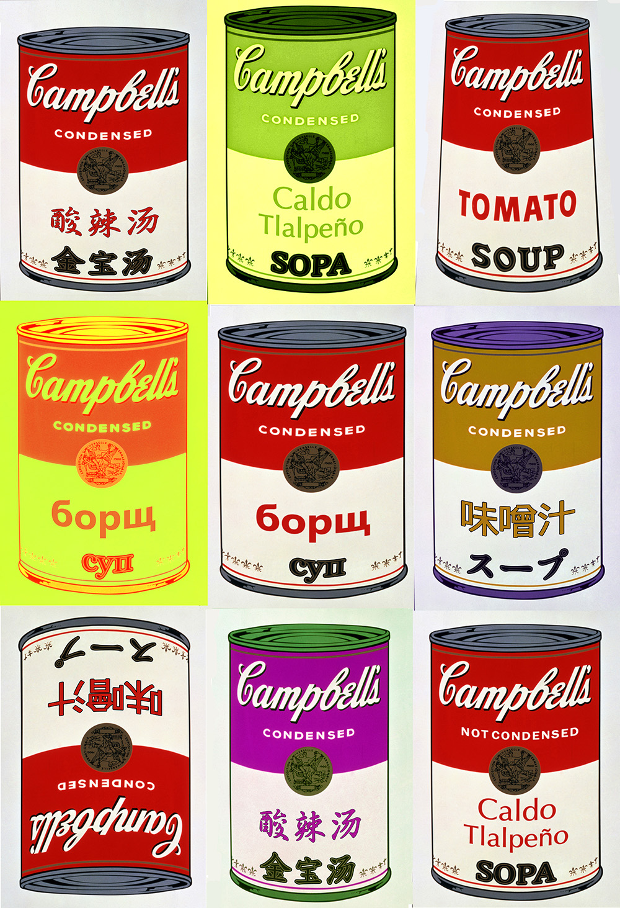

APAHM
Asian Pacific American Heritage Month
SERI: Free To Be
Seri is a Thai word (เสรี) meaning “free, liberated, and/or independent” The phrase “seri Thai” (free Thailand) was widely used during an anti-war movement in Thai history when Thailand was under a military dictatorship that conceded to Japanese occupation. Nowadays, the word “seri” carries a connotation of triumph, hope, and heritage.
What is APAHM?
Asian Pacific American Heritage Month (APAHM) is a celebration of the culture and history of Asian Americans and Pacific Islanders in the United States. Although APAHM is officially celebrated in the month of May, we celebrate APAHM here on Vanderbilt’s campus in the fall semester from October to early November.
Events Calendar
Join AASA in our celebration of Asian Pacific American Heritage Month!
ANTHEM: A Public Art Display
Anthem is AASA’s annual art collection, featuring written and visual artwork from the Vanderbilt community. We welcome submissions of your poetry, prose, photography, painting, and more!
Check out some of the submissions we received last year
-

-

- 
-

-

-